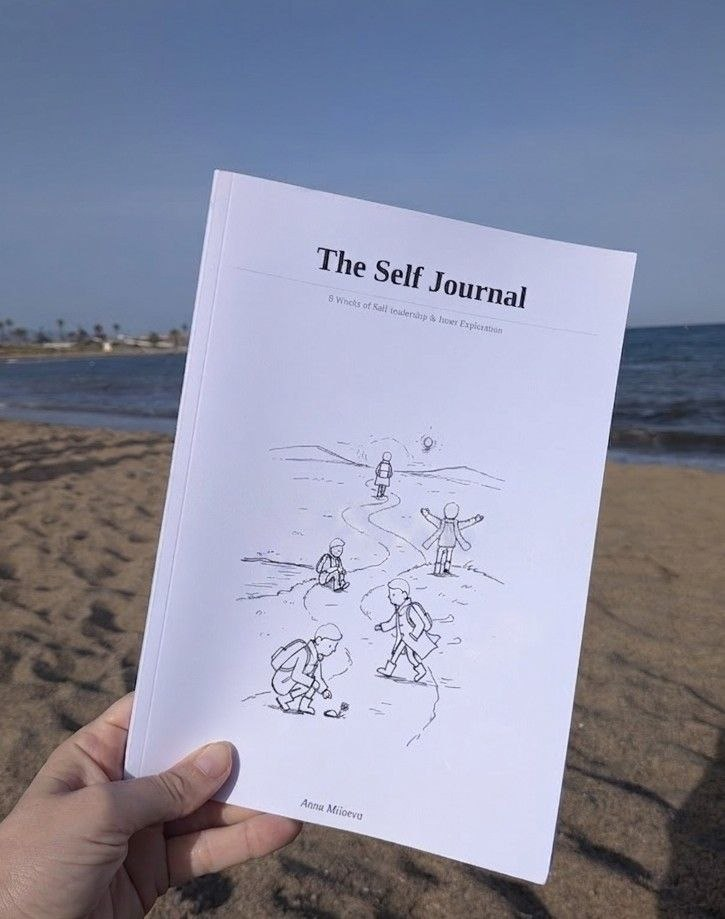

Three years of writing what I'm living.
Internal Family Systems (IFS), burnout, grief, money, meaning, relationships, leadership. Not after I've figured it out. While I'm in it. New pieces every week or two.
And my first novel is out. Already In A Meeting, now on Amazon →
Read on Substack
Already In A Meeting. My first novel, now on Amazon.
A story about the parts of us that never stop working. Five people, one company in trouble, and the meetings nobody sees: the ones running inside each of them. A decade of operations and years of parts work, turned into a story. Funny on the surface, real underneath.
If you see yourself in Kate, Daniel, Priya, Tom, or Marta, or in all five at once, you are not alone.

The Self-Journal is now on Amazon. In English and Spanish.
A companion for the inner work. Eight weeks, eight qualities of Self-leadership from IFS. Space to write by hand and make it yours.
Read by theme
Two pieces a week for three years, and the same questions underneath most of them. These are the ones I keep coming back to, grouped by what they are about. Each one opens on Substack, where the whole essay lives.
Start here, if Internal Family Systems is new to you
Having words matters. When we can name something, we can see it, and when we can see it, we can choose how to respond. These four are the shortest way into the language.
We Need Readers
IFS is like getting reading glasses for your inner world. You didn't know things were blurry until suddenly they weren't.
Read on SubstackThe Dictionary I Wish Someone Gave Me Sooner
Words for things we couldn't name. Once we start seeing more clearly, we often realize there were signs all along.
Read on SubstackWhy We Push Our Parts Away
We've been taught to push. Push through. Break through. Overcome resistance. This is what happens when we stop fighting ourselves.
Read on SubstackThe 60-Second Check: Is This Me or My Parts?
A practice for telling the difference between aligned action and urgent panic. You can do it anywhere.
Read on SubstackShame and guilt
Guilt says: I did something bad. Shame says: I am bad. Guilt is about behavior, shame is about identity, and the difference changes everything about what you can do with it.
What Shame Actually Is
Shame, especially the toxic kind that most of us carry, is like living with a dictator in your head who's convinced you're fundamentally wrong.
Read on SubstackThe Shame Cycle That Started in Childhood
Most of the shame we carry as adults didn't originate with us. Children are radically open and trusting, and that is where it got in.
Read on SubstackHow to Spot Shame in Your Daily Life
Shame is sneaky. It doesn't announce itself like anger or sadness do. It whispers lies that feel like facts.
Read on SubstackWhen Rejection Becomes Proof You're Worthless
When shame is already living in our system, rejection stops being information and becomes confirmation of what we secretly feared all along.
Read on SubstackPerfectionism and the part that keeps raising the bar
Here is the thing about a perfectionist. The moment you learn to spot one, you cannot stop. They are running half the room at any given time. We tend to do one of two things with perfectionism, and both of them miss.
In Defense of the Perfectionist
They get celebrated or they get eye-rolled. Almost no one actually looks at them.
Read on SubstackNobody Loads the Dishwasher Right
Lena's boss just called her report excellent. She heard the word, smiled, and is now thinking about the chart on page twelve.
Read on SubstackThe Exhausting Hamster Wheel of Self-Improvement
Where are we growing from excitement and love for growth, or from shame inside?
Read on Substack“Not Good Enough”: The Universal Feeling
A client asked me something that stuck with me. But wait, everyone feels not good enough? Even leaders like me? Really? The short answer is yes.
Read on SubstackBoundaries and the conversation you keep postponing
A weekend read for the ones who keep saying yes when they mean no. Because at some point, we have to say something. To the person. To the leader. To the partner.
Boundaries: When the Other Cheek Doesn't Work
Some pieces I write because I have an idea I want to share. This one is the opposite. The piece has been knocking.
Read on SubstackThe Conversation We've Been Avoiding
At some point you have to say something. To the person. To the leader. To the partner. Here's what stops us.
Read on SubstackThe Art of the U-Turn
These are the kinds of statements that can send a conversation spiraling into defensiveness, hurt, and disconnection in seconds.
Read on SubstackBoundaries: The IFS Approach to Self-Care and Relationships
Boundaries are the limits and rules we set for ourselves within relationships. In IFS, it is usually the Manager parts holding the line.
Read on SubstackBurnout and the working self
About 82% of employees are at risk of burnout. That's not a typo. And wherever you go, your parts go with you.
What Burnout Actually Is
More than eight out of ten people working right now are heading toward or already in burnout territory. Beyond the buzzword everyone's using.
Read on SubstackAll of You Goes to Work
There's this idea that we can separate ourselves. Work version, home version. But here's the truth: where you go, your parts go.
Read on SubstackThe Monday Morning Weight
What happens when the part that needs security and the part that longs for meaning are at war inside you.
Read on SubstackWhat Toxic Leadership Actually Is
What happens when someone's parts are so activated that they completely lose the capacity to hold space for anyone else's experience.
Read on SubstackThere Are No Layoffs in Your Inner Family
The inner family doesn't get restructured. No algorithm screens them out. No budget freeze eliminates them.
Read on SubstackGrief, loss, and what happens when things fall apart
There's a moment when something shifts and suddenly we can see what we couldn't see before. And then one day, clarity arrives, which is its own kind of hard.
When Things Fall Apart and We Finally See
Some of us have been screaming in a vacuum for years. Sensing something was wrong but not having words for it.
Read on SubstackThe Grief Nobody Wants to Feel
We were never taught how to grieve properly. And when we skip it, it doesn't disappear. It goes underground.
Read on SubstackThe Feelings Did Not Go Away. They Went Into a Room and Waited.
There is a part of me that is very good at regulation. What she is doing, most of the time, is high-functioning suppression in a vocabulary that sounds like regulation.
Read on SubstackWhen the World Is Too Heavy
You can do everything right internally and still feel crushed by what's happening out there. That's not a failure.
Read on SubstackPractices you can use today
Not in big dramatic ways that require retreats and sabbaticals. But in small, daily ways that keep the valve working.
From Noticing to Inspiring: a 4-Step Practice
Notice, Know, Need, and In-spire. A quick way to stay connected with our inner parts, especially useful in managing daily triggers.
Read on SubstackWho's in Your Living Room?
Something you can do in the moment when you feel yourself getting hijacked by your parts.
Read on SubstackA Parts Check-In
Slowing down enough to notice what's actually here. Sometimes your body has to force you to pause.
Read on SubstackRelease Valves: 7 Ways to Let the Pressure Out
The practices I'm about to share are almost embarrassingly simple. So simple that most of us dismiss them.
Read on SubstackRelationships, parents, and family
Trauma is the imprint an event leaves in the nervous system. The event happened, the system could not finish processing it, the imprint stayed. And trauma heals at the speed of relationship.
When You Had to Grow Up Too Soon
I've always been the responsible one. Everyone leans on me when things get tough. I find it almost impossible to ask for help.
Read on SubstackThey Have Parts Too: Seeing Your Parents as Human
I realized I wasn't talking to my father. I was talking to one of his protective parts. And everything changed.
Read on SubstackAligning Your Stars: Why Shared Values Matter
We love each other. Isn't that enough? The conversation most couples skip until it's too late.
Read on SubstackTrauma Heals at the Speed of Relationship
What trauma actually is, why most of us have it, and what makes the difference.
Read on SubstackSeven Years and Counting
What IFS did to our marriage. The language that replaced blame. And why we started working with couples.
Read on SubstackMoney and the parts it activates
Money. It's one of the most loaded topics in human experience, yet we rarely talk about it honestly.
The Pit in Your Stomach
There's that feeling in your stomach when you think about quitting your job to start something new. What money really triggers in our internal system.
Read on SubstackFrom Survival to Choice
I asked myself a simple question. What do I actually need right now? The answer had nothing to do with the object in my hands.
Read on SubstackThe Compassionate Look
Whatever you discovered about your money parts, they are not problems to fix or flaws to eliminate. Every part has a story.
Read on SubstackWhen Money Wounds Run Deep
What about when people you trusted took advantage of you financially? Sitting with financial trauma without rushing to heal.
Read on SubstackThese are a starting point. There are close to four hundred pieces in the archive, and new ones every week or two.